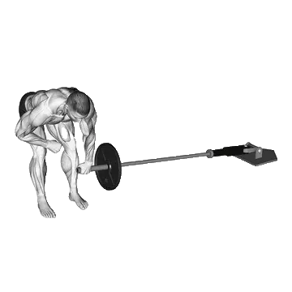

Meadows Row
Meadows Row mostra carga média e padrões de força como referência para costas. Músculos principais: Latíssimo do dorso.

Carga média: Intermediário
Referência para uma pessoa de nível intermediário.
Homens
39 kg
Mulheres
21 kg
Carga média de Meadows Row [1RM]
| Nível | ||
|---|---|---|
| Iniciante | 12 kg | 7 kg |
| Novato | 24 kg | 13 kg |
| Intermediário | 39 kg | 21 kg |
| Avançado | 58 kg | 30 kg |
| Elite | 81 kg | 40 kg |
Nota: estes padrões são estimativas de 1RM baseadas em atletas médios. Peso corporal, idade e outros fatores pessoais podem afetar os valores. Veja as tabelas detalhadas abaixo.
Seu nível atual
Calcule o 1RM estimado e o nível de Meadows Row
Estime o 1RM pela carga e repetições realizadas e compare com padrões por peso corporal.
Resultado
Registrar Meadows Row no Shiba
Isto é uma estimativa. Técnica, amplitude e fadiga podem alterar o resultado. Ver método
Padrões de força de Meadows Row (kg)
Homens por peso corporal (kg) [1RM]
| Peso corporal | Iniciante | Novato | Intermediário | Avançado | Elite |
|---|---|---|---|---|---|
| 50 | 5 | 13 | 24 | 38 | 55 |
| 55 | 7 | 15 | 27 | 42 | 60 |
| 60 | 8 | 17 | 30 | 46 | 64 |
| 65 | 10 | 19 | 33 | 49 | 68 |
| 70 | 11 | 21 | 35 | 52 | 72 |
| 75 | 13 | 24 | 38 | 56 | 76 |
| 80 | 15 | 26 | 40 | 59 | 79 |
| 85 | 16 | 28 | 43 | 62 | 83 |
| 90 | 18 | 29 | 45 | 65 | 86 |
| 95 | 19 | 31 | 48 | 67 | 89 |
| 100 | 20 | 33 | 50 | 70 | 93 |
| 105 | 22 | 35 | 52 | 73 | 96 |
| 110 | 23 | 37 | 54 | 75 | 98 |
| 115 | 25 | 39 | 56 | 78 | 101 |
| 120 | 26 | 40 | 58 | 80 | 104 |
| 125 | 27 | 42 | 60 | 82 | 107 |
| 130 | 29 | 44 | 62 | 85 | 109 |
| 135 | 30 | 45 | 64 | 87 | 112 |
| 140 | 31 | 47 | 66 | 89 | 114 |
Homens por idade [1RM]
| Idade | Iniciante | Novato | Intermediário | Avançado | Elite |
|---|---|---|---|---|---|
| 15 | 11 | 20 | 33 | 50 | 69 |
| 20 | 12 | 23 | 38 | 57 | 79 |
| 25 | 12 | 24 | 39 | 58 | 81 |
| 30 | 12 | 24 | 39 | 58 | 81 |
| 35 | 12 | 24 | 39 | 58 | 81 |
| 40 | 12 | 24 | 39 | 58 | 81 |
| 45 | 12 | 22 | 37 | 55 | 76 |
| 50 | 11 | 21 | 35 | 52 | 72 |
| 55 | 10 | 19 | 32 | 48 | 66 |
| 60 | 9 | 18 | 29 | 44 | 61 |
| 65 | 8 | 16 | 27 | 40 | 55 |
| 70 | 8 | 14 | 24 | 36 | 49 |
| 75 | 7 | 13 | 21 | 32 | 44 |
| 80 | 6 | 12 | 19 | 29 | 39 |
| 85 | 5 | 10 | 17 | 26 | 35 |
| 90 | 5 | 9 | 15 | 23 | 32 |
Mulheres por peso corporal (kg) [1RM]
| Peso corporal | Iniciante | Novato | Intermediário | Avançado | Elite |
|---|---|---|---|---|---|
| 40 | 5 | 9 | 16 | 24 | 33 |
| 45 | 5 | 10 | 17 | 25 | 34 |
| 50 | 6 | 11 | 18 | 26 | 36 |
| 55 | 7 | 12 | 19 | 28 | 38 |
| 60 | 7 | 13 | 20 | 29 | 39 |
| 65 | 8 | 13 | 21 | 30 | 40 |
| 70 | 8 | 14 | 22 | 31 | 41 |
| 75 | 9 | 15 | 23 | 32 | 43 |
| 80 | 9 | 15 | 23 | 33 | 44 |
| 85 | 10 | 16 | 24 | 34 | 45 |
| 90 | 10 | 17 | 25 | 35 | 46 |
| 95 | 11 | 17 | 26 | 36 | 47 |
| 100 | 11 | 18 | 26 | 36 | 47 |
| 105 | 12 | 18 | 27 | 37 | 48 |
| 110 | 12 | 19 | 27 | 38 | 49 |
| 115 | 12 | 19 | 28 | 38 | 50 |
| 120 | 13 | 20 | 29 | 39 | 51 |
Mulheres por idade [1RM]
| Idade | Iniciante | Novato | Intermediário | Avançado | Elite |
|---|---|---|---|---|---|
| 15 | 6 | 11 | 18 | 25 | 34 |
| 20 | 7 | 13 | 20 | 29 | 39 |
| 25 | 7 | 13 | 21 | 30 | 40 |
| 30 | 7 | 13 | 21 | 30 | 40 |
| 35 | 7 | 13 | 21 | 30 | 40 |
| 40 | 7 | 13 | 21 | 30 | 40 |
| 45 | 7 | 12 | 20 | 28 | 38 |
| 50 | 7 | 12 | 18 | 27 | 36 |
| 55 | 6 | 11 | 17 | 25 | 33 |
| 60 | 6 | 10 | 15 | 22 | 30 |
| 65 | 5 | 9 | 14 | 20 | 27 |
| 70 | 5 | 8 | 13 | 18 | 25 |
| 75 | 4 | 7 | 11 | 16 | 22 |
| 80 | 4 | 6 | 10 | 15 | 20 |
| 85 | 3 | 6 | 9 | 13 | 18 |
| 90 | 3 | 5 | 8 | 12 | 16 |
Nota: uma barra padrão de academia geralmente pesa 20 kg.
Músculos trabalhados
| Grupo | Músculos |
|---|---|
| Músculos principais | Latíssimo do dorso |
| Músculos secundários | Trapézio, Deltoides |
| Estabilizadores | Oblíquos externos, Eretores da espinha |
| Pegada | Flexores do antebraço |
Registre e analise no app Shiba
Revise carga, repetições e progresso em um só lugar.
Como ler a tabela
| Nível | Descrição | Distribuição |
|---|---|---|
| Iniciante | Aprendeu a forma correta e treinou consistentemente por pelo menos 1 mês. | Base 5% |
| Novato | Treinou consistentemente por pelo menos 6 meses. | Top 80% |
| Intermediário | Treinou consistentemente por pelo menos 2 anos. | Top 50% |
| Avançado | Treinou consistentemente por mais de 5 anos. | Top 20% |
| Elite | Treinou especificamente este exercício por mais de 5 anos. | Top 5% |
Outros exercícios
Costas
Behind-The-Back Barbell Shrug
Costas / Barra
Reverse Hyperextension
Costas
Deadlift
Costas / BIG3
Pull-Up
Costas / Peso corporal
Bent-Over Row
Costas
Lat Pulldown
Costas
Chin Up
Costas / Peso corporal
Dumbbell Row
Costas / Halteres
Seated Cable Row
Costas / Cabo
Barbell Shrug
Costas / Barra
T-Bar Row
Costas
Dumbbell Shrug
Costas / Halteres